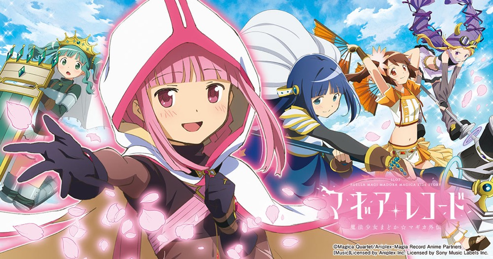

スマスロ マギアレコード 魔法少女まどか☆マギカ外伝
4種類のBONUSからマギアラッシュへ。8つのストーリーを集めてエンブリオ・イブ覚醒を目指す。
- 導入
- 2025年4月
- メーカー
- ミズホ
- 分類
- パチスロ
主要スペック
BIG・みたま・エピソード・アリナミュージアムからATを目指し、10Gのマギアアタックで初期ゲーム数を決定。ストーリー、コネクトチャンス、キャラ別コネクト、全8話コンプリート後のエンブリオ・イブ覚醒までを専用画面で体験できます。
- BIG BONUSは30G＋α・AT期待度40%
- マギアアタックは前半5G＋後半5Gで初期G数決定
- ストーリー全8種類コンプリートでエンブリオ・イブ覚醒濃厚
スマスロ マギアレコード 魔法少女まどか☆マギカ外伝の見どころと計算条件
BIG・みたま・エピソード・アリナミュージアムからATを目指し、10Gのマギアアタックで初期ゲーム数を決定。ストーリー、コネクトチャンス、キャラ別コネクト、全8話コンプリート後のエンブリオ・イブ覚醒までを専用画面で体験できます。
スマスロ マギレコを数字で早分かり
4種類のBONUS、マギアアタック、ストーリー、コネクト、エンブリオ・イブ覚醒を機種専用で記録します。
30秒で分かるスマスロ マギレコ
BONUSでATを勝ち取り、ゲーム数上乗せとストーリーを重ねて全8話コンプリート・エンブリオ・イブ覚醒を目指すゲーム数管理型です。
こんな遊び方に向いている
- BONUS最終PUSHでAT当落を決めたい
- マギアアタックの初期ゲーム数を開きたい
- ストーリーとキャラ別コネクトを積み重ねたい
遊ぶ前に確認したいこと
- BONUS・AT初当り、純増、主要ゲーム数は公開値
- ストーリー回数とキャラ別の最低上乗せを反映
- 非公開のBONUS・報酬配分は体験用代表値
4種類のBONUSからATを目指す
BIG BONUSは30G＋α・純増約2.6枚/Gで、消化中に高確ゲーム数とATを抽選。AT期待度は40%です。みたまBONUSはベルナビ8回＋最終ジャッジ1Gで報酬を決定します。
エピソードBONUSは50GでAT濃厚、アリナミュージアムは30G間毎ゲームATゲーム数を上乗せします。シミュレーターでは最後のPUSHまでAT当落を伏せます。
マギアアタックで初期ゲーム数を決定
AT開始時は10Gのマギアアタックへ。前半5Gのガチャパートでカードを集め、後半5Gはカードと成立役を参照して毎ゲーム上乗せします。
カードのキャラ・属性・レアリティごとの全振り分けは簡略化し、合計初期ゲーム数をPUSHで開く専用演出にまとめています。
ストーリーとコネクト
AT中はゲーム数消化やレア役から報酬を獲得。ストーリーは20Gでカウント＋1、スペシャルストーリーは30Gでカウント＋2です。全8種類のコンプリートが上位ATへの主要ルートです。
ストーリー後は3Gのコネクトチャンスを経て、やちよ10G以上・鶴乃20G以上・さな30G以上・フェリシア／黒江50G以上・ほむら／まどか100G以上のキャラ別上乗せを表示します。
エンブリオ・イブ覚醒
ストーリーコンプリート後はエンディングを経て、32Gの覚醒準備と10G＋αのエンブリオ・イブアタックへ進み、上位ATの初期ゲーム数を決定します。
エンブリオ・イブ覚醒は通常ATと同じゲーム数管理型ですが、ストーリー当選時に必ずコネクトチャンスが発生する強化状態です。
固定条件と簡略化する範囲
- 約32.6G/50枚・1,000円46枚貸し・5.2枚交換で固定
- 設定1〜6を均等抽選し、BONUS・AT初当りは公開設定別値を使用
- BONUS性能、主要ゲーム数、純増、ストーリー・コネクト性能は公開値を優先
- BONUS種類、AT報酬、キャラ選択など非公開配分は体験用代表値
- 19,000枚到達時はコンプリート表示
平均Gと投資目安の計算
掲載するマギアラッシュ初当り約1/654.6は設定1基準です。当サイトでは50枚あたり32.6G、1,000円46枚貸しの固定条件から、設定1基準の平均投資目安を約21,800円と計算します。
シミュレーターでは設定1〜6を均等抽選します。設定1〜6で公開されている初当り値を個別に使います。公開されていない特化ゾーン・上位到達率の設定差は加えません。 換金は5.2枚交換で固定し、結果とランキングに設定を表示します。
シミュレーション結果の見方
当るまで初当りBONUS・マギアラッシュまでのゲーム数
設定設定1・2・3・4・5・6から抽選された今回の設定
上位到達エンブリオ・イブ覚醒準備とエンブリオ・イブ覚醒への到達
最終収支差枚と5.2枚交換の収支目安
結果は自動で「マイ記録」に保存され、同じ機種を何回試したか、最高収支、勝率をあとから確認できます。
簡易シミュレーターについて
初当りBONUS・マギアラッシュ・エンブリオ・イブ覚醒の流れを固定条件で体験できます。JavaScriptを有効にすると、この位置にシミュレーター、演出、マイ記録、機種別ランキングが表示されます。
結果は娯楽・確率理解のための参考表示です。金銭的価値や交換価値はなく、実際の勝敗や収支を保証しません。18歳未満の方の利用はお控えください。
スマスロ マギレコのよくある質問
スマスロ マギレコはどんな台？
BIG・みたま・エピソード・アリナミュージアムからATを目指し、10Gのマギアアタックで初期ゲーム数を決定。 BIG BONUSは30G＋α・AT期待度40%が主な確認ポイントです。
スマスロ マギレコの平均投資目安は？
設定1基準のマギアラッシュ初当り約1/654.6と、50枚あたり32.6G・46枚貸しの固定条件から、平均21,800円を目安として表示します。実際の設定や遊技状況で結果は変わります。
設定とゲームの流れはどう抽選する？
開始時に設定1・2・3・4・5・6から1つを均等抽選し、初当りBONUS、マギアラッシュ、エンブリオ・イブ覚醒準備、エンブリオ・イブ覚醒の順で到達を判定します。設定は最終結果とランキングに表示します。
収支はどう計算する？
1,000円46枚貸し・5.2枚交換の固定条件で投資、換金、収支目安を計算します。実店舗の再プレイ、持ちメダル、端数処理は含みません。